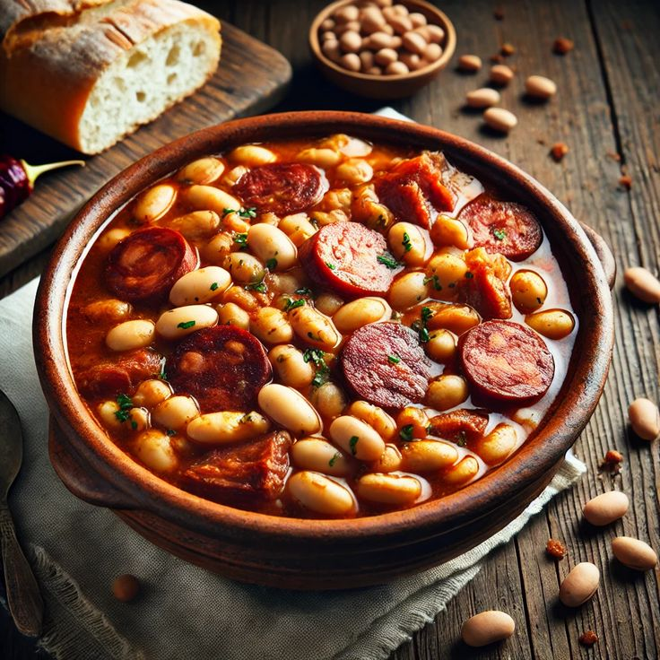

Fabada Asturiana

Ingredientes:
- 100 g de fabes (alubias blancas secas, tipo asturiano)
- 1/2 chorizo asturiano
- 1/2 morcilla asturiana
- 1 trocito de panceta curada (unos 30-40 g)
- (Opcional) Un pedacito de lacón o tocino salado
- 1/4 de cebolla (opcional, entera)
- 1 diente de ajo (entero, sin pelar si quieres retirarlo luego)
- 1 hoja de laurel
- Hebras de azafrán o una pizca de pimentón dulce
- Sal al gusto
- Agua (lo suficiente para cubrir las fabes 2-3 dedos por encima)
Preparación:
- Escurre las fabes remojadas y ponlas en una olla pequeña.
- Añade el chorizo, la morcilla, la panceta, el ajo y la hoja de laurel. Si usas cebolla, agrégala entera (se retira al final).
- Cubre con agua fría unos 2-3 dedos por encima y lleva a fuego medio.
- Cuando empiece a hervir, espuma la superficie (quita la espuma blanca) y baja el fuego al mínimo para que cuezan suavemente.
- Asústalas: durante la cocción, añade un chorrito de agua fría 2 o 3 veces cuando rompa el hervor. Esto ayuda a que las fabes no se rompan.
- Cocina a fuego lento unas 2 a 3 horas, o hasta que las fabes estén tiernas y cremosas. (Si usas olla exprés: unos 35-40 minutos).
- Cuando estén tiernas, añade la sal (nunca antes), y si quieres, una pizca de pimentón o azafrán para dar color y aroma.
- Retira el ajo, la cebolla (si la pusiste), y sirve bien calentita con el compango cortado en trozos.